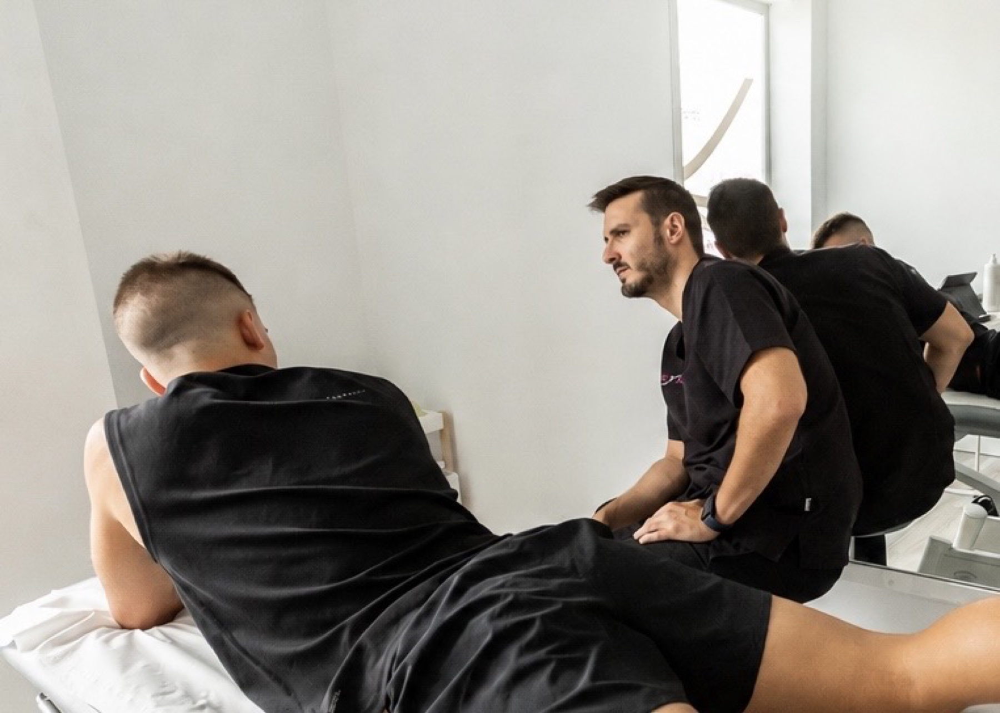
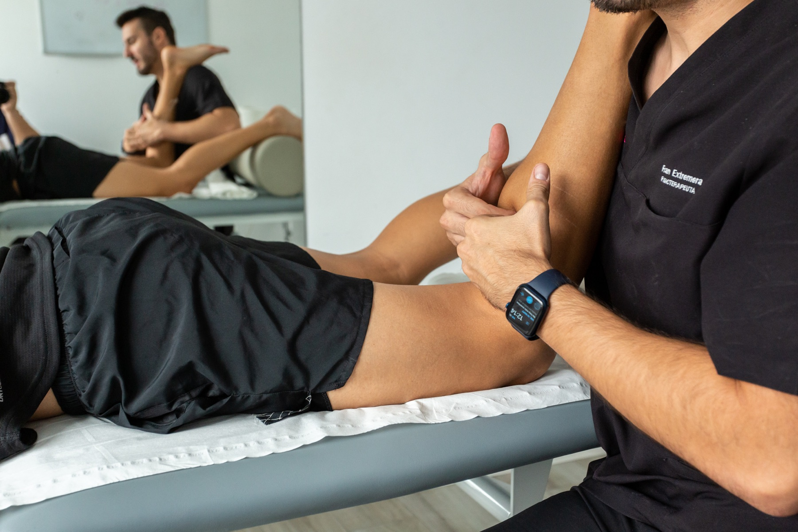

Mirada completa
No reducimos tu problema al lugar donde duele. Buscamos los factores que lo mantienen y los que podemos cambiar.
Fisioterapia · movimiento · confianza
Entendemos qué limita tu movimiento, diseñamos un plan contigo y te acompañamos para que vuelvas a hacer lo que te importa.

Valoración individual
Objetivos compartidos
Progreso medible
El dolor y la lesión tienen contexto. Por eso empezamos escuchando, valoramos tu movimiento y tomamos decisiones clínicas que encajan contigo, con tus objetivos y con tu día a día.
No reducimos tu problema al lugar donde duele. Buscamos los factores que lo mantienen y los que podemos cambiar.
La terapia manual puede ayudar; el movimiento bien elegido te devuelve capacidad, autonomía y confianza.
Entender qué ocurre también forma parte del tratamiento. Sin alarmismo, jerga innecesaria ni falsas promesas.

Atención de persona a persona
No hay dos procesos iguales. La consulta empieza entendiendo qué te preocupa, qué necesitas recuperar y cómo encaja el tratamiento en tu vida real.
“La técnica importa. Saber cuándo, por qué y para quién utilizarla importa todavía más.”
Áreas de atención
Problemas de espalda, cuello, hombro, cadera, rodilla y otras regiones que limitan tu movimiento o tu actividad diaria.
Dolor recurrente o mantenido que requiere comprender el contexto, recuperar función y avanzar con objetivos realistas.
Dolor mandibular o facial, limitación del movimiento y otros síntomas relacionados con la articulación temporomandibular (ATM).
Un enfoque osteopático integrado en la valoración fisioterapéutica, con especial atención a la sensibilidad, la movilidad neural y la respuesta vascular, y derivación cuando los hallazgos lo requieren.
Cómo trabajamos
Qué sientes, desde cuándo y, sobre todo, qué has dejado de poder hacer.
Exploramos movimiento, capacidad y contexto para construir una hipótesis útil.
Acordamos objetivos, prioridades y una estrategia que puedas integrar en tu vida.
Revisamos tu evolución y adaptamos la carga para que el progreso tenga dirección.
Detrás de FisioLógico
FisioLógico es la marca personal de Francisco José Extremera García, fisioterapeuta colegiado 4288 y osteópata D.O. Su trabajo une experiencia clínica, docencia y análisis crítico de la evidencia.
Colaborador honorario del Departamento de Fisioterapia de la Universidad de Málaga durante el curso 2026/2027. Ejerce clínicamente en Nexus Fisioterapia y Salud, en Teatinos.
Experiencia en dolor musculoesquelético, fisioterapia invasiva aplicada al neuroeje, dolor orofacial y trastornos temporomandibulares.
Con lógica
Una mirada personal sobre fisioterapia, dolor, movimiento y profesión. Aquí escribe Fran: desde la experiencia, con fuentes cuando las hay y sin disfrazar las dudas de certezas.
Entrar en Con lógicaLa meta no es que dependas de la camilla.
El siguiente movimiento
Atención clínica en Nexus Fisioterapia y Salud, avenida de Plutarco 85, Teatinos-Universidad, 29010 Málaga.
Pedir cita por WhatsApp La cita y la atención clínica se gestionan a través de Nexus.Formación FisioLógico
Cursos para fisioterapeutas que quieren convertir el conocimiento en decisiones clínicas útiles, explicables y aplicables desde el día siguiente.
Partir del problema clínico, no de una técnica aislada.
Usar la evidencia sin perder de vista a la persona y su contexto.
Trabajar con casos, razonamiento y herramientas que llegan a consulta.